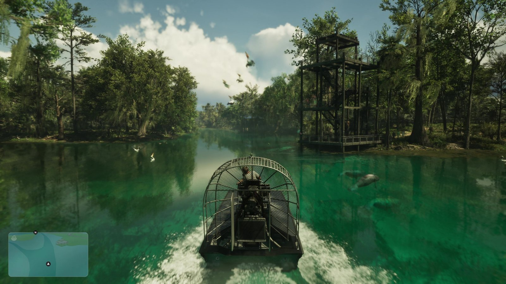
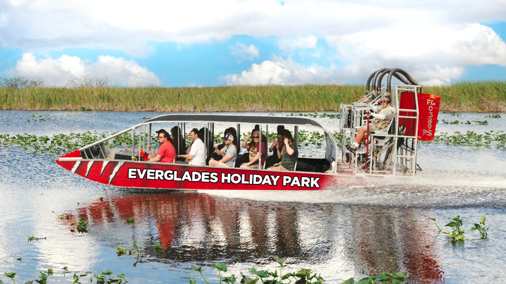
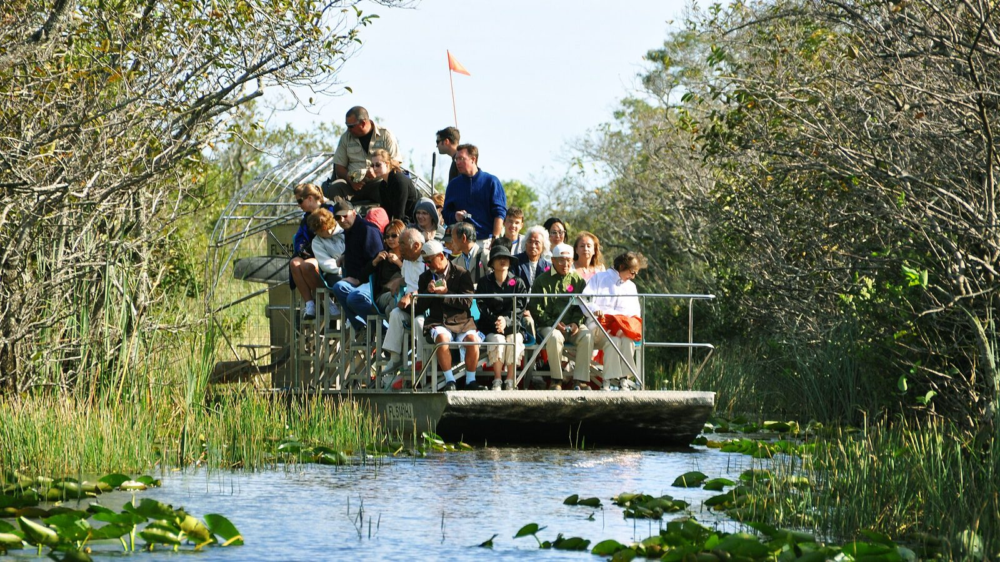

Аэроглиссер
Обновлено:
Лодка с плоским дном и воздушным винтом в клетке сзади — в игре такая же, как на туристических маршрутах Эверглейдс.


- Аэроглиссер (airboat) — лодка с плоским дном и авиационным винтом.
- Он проходит по мелководью и траве, где обычный мотор застрянет.
- В игре его водят и туристы, и полиция.
- Одну из первых таких лодок построили в 1905 году в команде Александра Белла.
Что в игре
В «Расширенном показе» аэроглиссер — одно из занятий в Леониде: Джейсон несётся по протоке болот. На официальном кадре погони в Grassrivers аэроглиссер есть и у полиции.
Что в реальности
Airboat устроен просто: плоское дно без киля и мотор с большим винтом сзади, в защитной клетке. Винт толкает воздух, а не воду, поэтому лодке не нужна глубина — она скользит по траве, грязи и совсем мелкой воде. Для Эверглейдс это идеальный транспорт, и сегодня на нём катают туристов по всему югу Флориды.

Одну из первых лодок с воздушным винтом в 1905 году построили в Новой Шотландии (Канада) в команде Александра Грейама Белла, изобретателя телефона. Её прозвали «Гадкий утёнок» (Ugly Duckling). Так что у самого флоридского транспорта в GTA 6 канадские корни.
Совпадает и отличается
| Реальность | GTA 6 | |
|---|---|---|
| Плоское дно, винт в клетке сзади | Да | 🟢 Да |
| Ход по траве и мелководью | Да | 🟢 На кадрах |
| Туристы и полиция | Да | 🟢 Оба варианта на кадрах |
| Шум | Очень громкий, пассажирам дают наушники | Узнаем в игре |
Где аэроглиссеры водятся в Леониде — в сравнении «Grassrivers и Эверглейдс».
Источники: Rockstar Games — «Расширенный показ» (17:10), официальные кадры Grassrivers; National Park Service (airboat в Эверглейдс); история лаборатории А. Г. Белла, Баддек, Новая Шотландия.
Реальные фото: Фото: Garytroutt, CC BY-SA 4.0 · Wikimedia Commons; Фото: chensiyuan, CC BY-SA 4.0 · Wikimedia Commons. Кадры игры: Rockstar Games.
Разборы кадров, слухи и факты за 30 секунд. Подписывайтесь:
YouTubeInstagramTikTok
 vs
vs
 vs
vs
 vs
vs